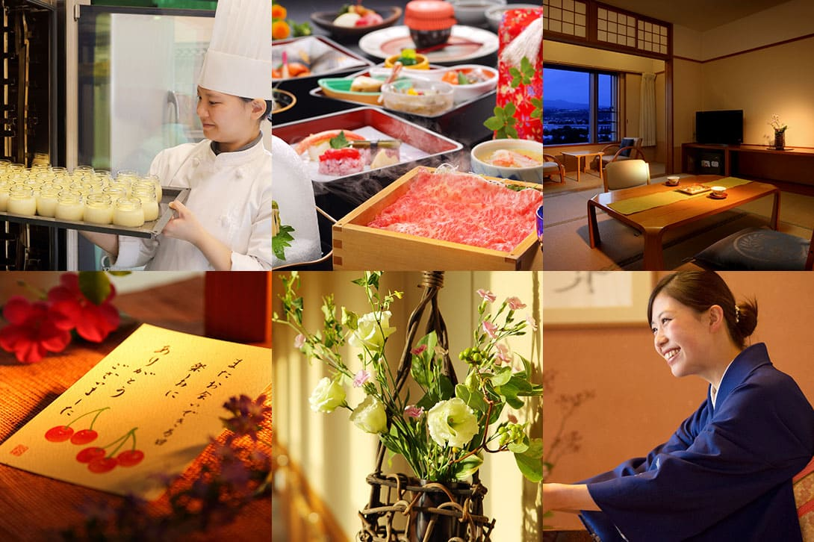
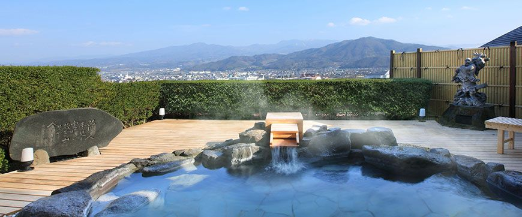
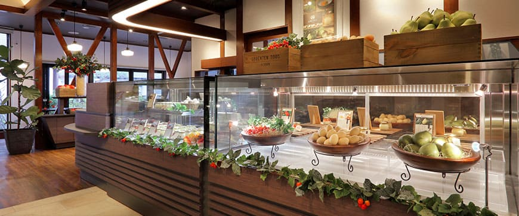
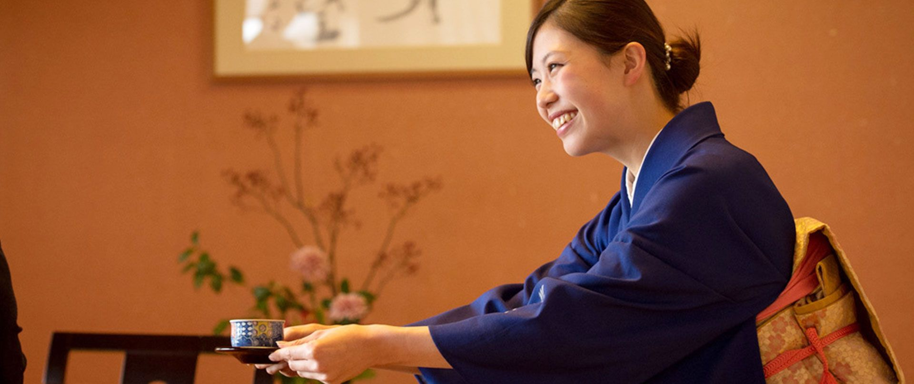

山形の旅館・レストラン【公式】古窯グループ
今日、この瞬間に、最高の山形を。

私達はこれまで”山形”という地域そのものを商品として、この地域の良さを発信し、山形の価値を高めたいという強い想いで仕事をしています。この土地ならではの人、風景、食べ物、この土地での様々な体験がお客様の感動につながるため、私達は自信を持って山形の魅力を提供し、どうすれば上手に伝わるかを常々考え仕事をしています。
新着情報
- 2025/3/10 - 【花と新緑が彩る春のおやど】かみのやま温泉 おやど森の音では、春イベント「芽吹きの森」を3月1日(土)より開催いたします。
- 2025/3/10 - 山形で一足早くお花見を！🌸 春の訪れを感じる、おふろcafé yusaの春イベント「ゆさうらら」を3月10日（月）より開催。花咲く...
- 2025/3/02 - 山形県産”天使のいちご”を使用した「天使のいちごプリン」入りの「いちごのホワイトデーセット」が、2025年3月3日（月）より...
- 2025/3/01 - 山形県東根市産の希少な“天使のいちご”を使用した「天使のいちごプリン」が、3月4日(火)より期間限定で店頭販売を開始します。
グループ施設
泊まる

- 日本の宿 古窯: 伝統が薫るおもてなしの宿。プロが選ぶ旅館百選TOP10に選ばれ続けるおもてなしの温泉宿。温泉の泉質は「三大美人泉質」として知られています。
- 悠湯の郷ゆさ: 蔵王連峰の雄大な姿を臨む絶景大浴場が自慢の宿。旅館の温かさとホテルの快適さをテーマに安らぎのひとときを提供致します。
- おやど 森の音: 緩やかな坂の上、木製の重い扉を開くと、目に飛び込む中庭の光。豊かな自然、いのちを癒す宿をどうぞ思いのまま、お愉しみください。
- あつみ温泉 萬国屋: 創業三百余年の歴史を持つ老舗旅館。温海岳や温海川など、あつみ温泉の自然に囲まれた萬国屋。松尾芭蕉、与謝野晶子など文人墨客が数多く訪れ、詩歌や小説にうたわれました。
味わう

- 山形プリン: 新鮮素材を使用したプリン専門店。地元かみのやまで、山形県産の素材を活かした「美味しいスイーツをつくりたい」という想いから菓子づくりが始まりました。
体験する
- KOYO Wedding: 雅楽の音色が鳴り響く、神前式場。日本の伝統美を体感する雰囲気たっぷりの和風ウェディング。和風旅館ならではの落ち着いた結婚式は、ゲストにも大好評です。
採用情報

古窯グループで私たちと一緒に働きませんか？働くメンバー一人一人が山形の魅力を伝えるパフォーマーであり”山形で働くこと”そのものが自然と山形のファンを増やすことにつながっていく会社です。「お客様の喜びを我が喜びとする」様々な職種が集まり協力して一つのサービスを提供する古窯グループのメンバーを募集しております。
Copyright 2020–2025 koyo All Rights Reserved.
会社概要
| 会社名 |
株式会社旅館古窯 |
| 所在地 |
〒999-3292 山形県上山市葉山5-20 |
| 設立 |
1964年5月（創業/1951年10月） |
| 資本金 |
3,300万円 |
| 代表者 |
代表取締役社長 佐藤 洋詩恵（女将）
代表取締役専務 佐藤 太一（兼 悠湯の郷 ゆさ 総支配人）
常務取締役 佐藤 奈美（若女将）
会長 佐藤 信幸
|
| 事業内容 |
宿泊サービスを始め、ブライダル事業、飲食・レストランなど山形を主としてサービス業を展開しております。 |
| 運営施設 |
日本の宿 古窯、悠湯の郷 ゆさ、おやど 森の音、山形県あつみ温泉 萬国屋、山形プリン、KOYO Wedding |